Two buttons.
One voice.
No screen.
A little aluminium box for a child, an iPhone app for the parent who lives somewhere else. Press Record, talk, press again, and the parent hears it. When an answer arrives, Play glows.
Presence, not a phone call.
A call needs both people free at the same moment, and a kid on a video call with a parent they miss often just goes quiet. A box that holds a voice until someone is ready to hear it fits how a child actually stays close to someone who isn't there.
The box · for the child, age 6–9
- Press Record. It turns red, and only now does the microphone get power.
- Talk, for up to five minutes. No timer, nothing to read.
- Press again. One green pulse means got it: it's safely on disk.
- When an answer arrives, Play breathes green and chimes once (never during quiet hours).
The app · for the parent
Conversation: one timeline, both directions, the whole archive. Tap to record, review, send. Every message you send shows sent → on the box → played 19:12.
Box: signal, last check-in, queue, quiet hours, volume, and any fault in words. The child never has to interpret an error; the adult reads it here.
A push arrives when the child sends something, and also when the box hasn't checked in for hours.
The lights are the whole display
Two RGB rings, seven states. No status LEDs; why the box isn't ready is the app's job to explain.
Rules that shaped every decision
The real thing, so far.
Built at a kitchen table over a few evenings in autumn 2026. It stands on its long edge like a small radio: buttons on the left, speaker in the middle, power and antenna on top. Tap a photo to enlarge it.
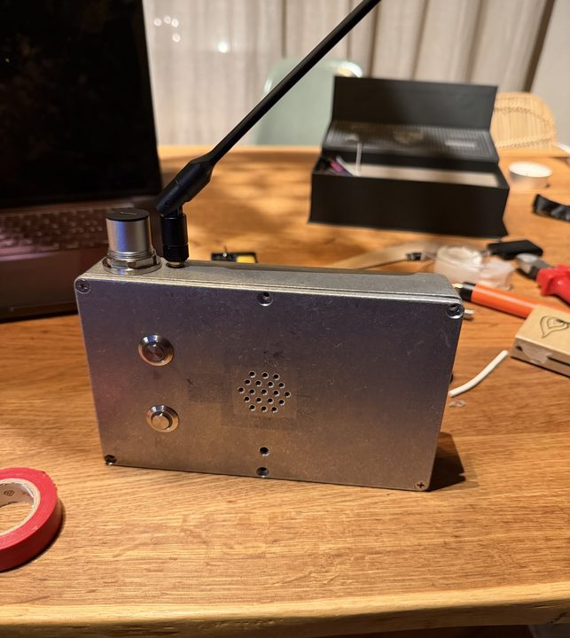
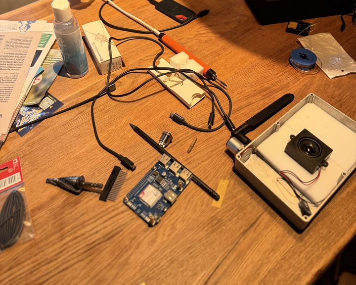
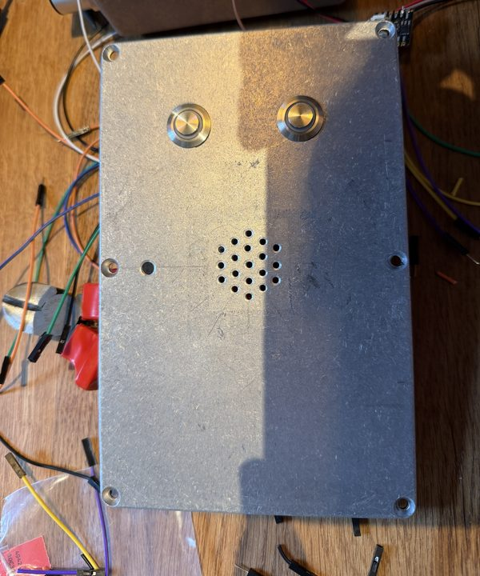
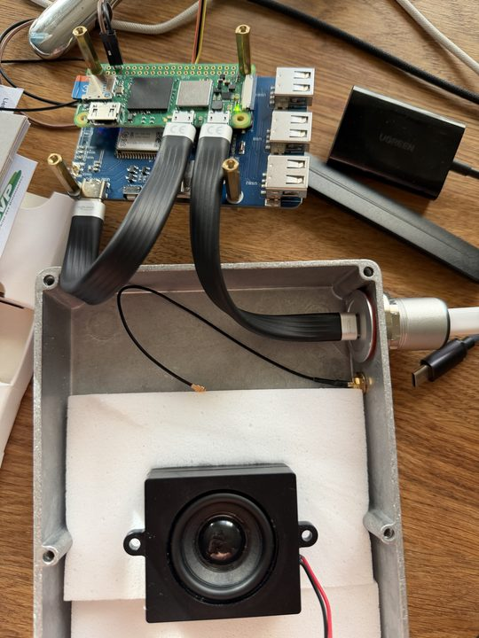
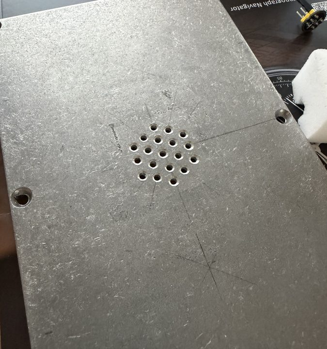
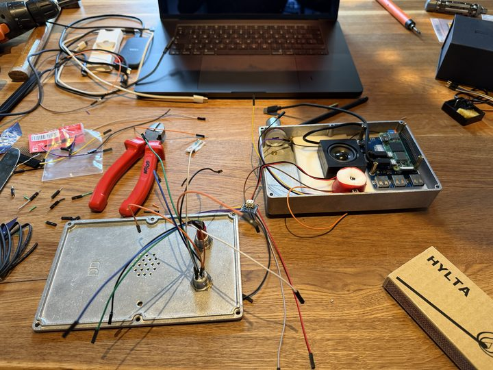
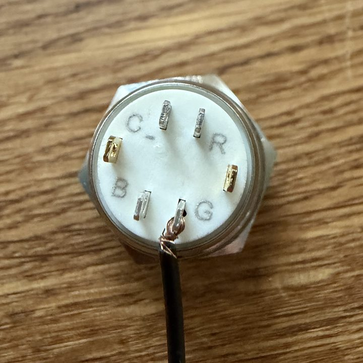
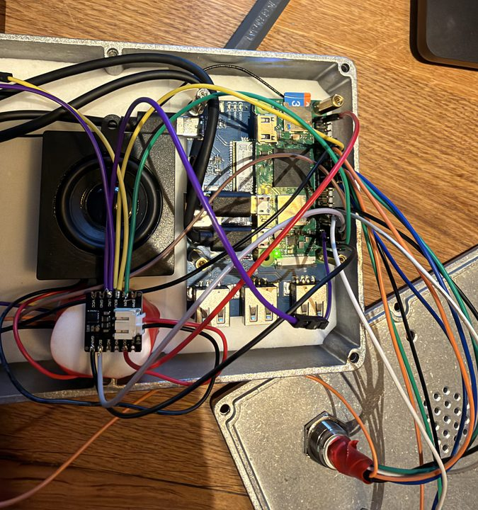
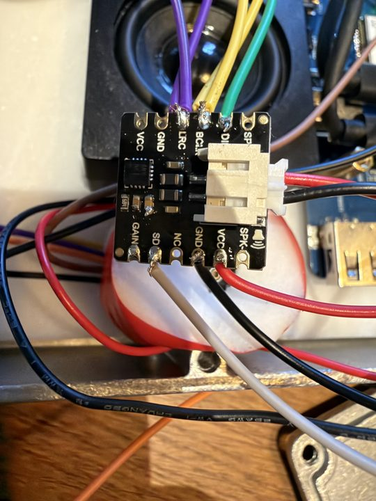
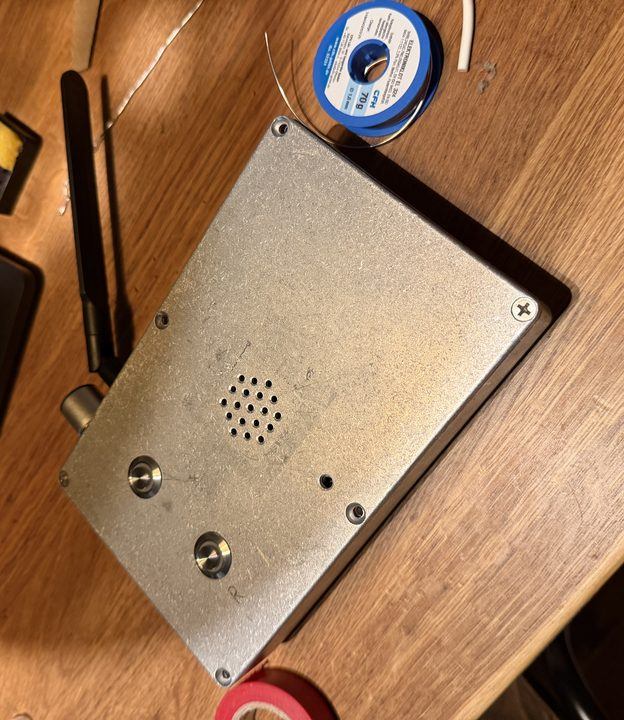
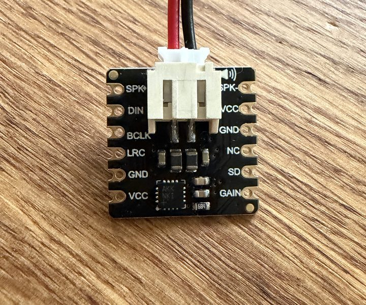
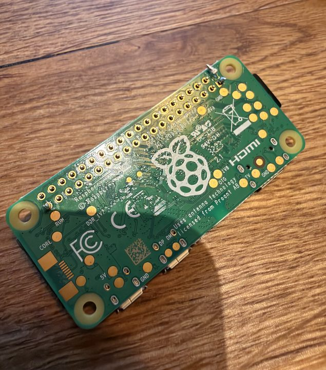
Every hole, every wire.
Drawn from the build photos and hardware/cad/layout.json. Box: 188 × 119 × 37.5 mm, a 1590DD-size die-cast clone. Measure your own box before drilling, because clones differ by a millimetre or two.
The lid is the face. Two 16 mm holes (step drill to 15, file to 16), a 2 mm mic hole, and a 19-hole grille over the speaker. Play on top, Record below.
Power and radio come in through the top edge: a USB-C panel socket (22.3 mm hole) and the antenna's SMA bulkhead (6.5 mm). The antenna swivels upright.
The Pi Zero sits on the LTE HAT on four nylon standoffs; the speaker is pressed against the grille by a foam block; the buttons and mic hang from the lid. Wires are soldered, not plugged, because plugs shake loose in a bag.
The one wire that matters most. The mic is powered from the Record button's red LED tab, so the red light comes first in the chain. No software can turn the mic on with the light off.
Box, server, phone. One protocol.
Three pieces that speak one written contract (docs/PROTOCOL.md). The protocol changes first, then the code. Only the box and the phone hold the key.
Recording
16 kHz mono from the I2S mic, written to /data as it happens. On stop: trim, encode Opus 16 kbps (~120 KB a minute), encrypt, CRC, fsync, rename into the outbox. Only then the green pulse.
Sending
A resumable upload in 32 KB chunks. No link? It waits, forever, and the child never hears about a network. A 3-minute note went through in 8.5 s on a CHF 6/month SIM.
Receiving
Plugged in, the box checks in every minute, and a realtime "doorbell" brings messages instantly. Oldest first, one per press; with nothing new, Play repeats the last one.
A Linux box you can SSH into
Raspberry Pi OS Lite with a read-only root: only /data is written, so pulling the plug is safe. A watchdog restarts a hung service. Tailscale reaches it from anywhere; dadboxctl drives it.
Runs on your laptop too
The state machine is pure Python. The same service runs on a Mac as a simulator with a web UI (virtual buttons, lights and speaker), so you can try everything before buying a single part.
What already works.
- Server live on Supabase; every protocol endpoint exercised end to end (dropped-link resume, shuffled chunks, the "box is late" alert)
- Box service deployed to the Pi, with a full simulator on the Mac
- LTE modem working as a plain network interface
- Read-only root: power cuts while idle and mid-boot, everything intact
- Both buttons and all six light channels wired and verified
- 5 V in on the header pins, no undervoltage
- iPhone app: conversation, recorder, Box screen
- Lid drilled; buttons, grille and mic hole done
Off the shelf. No custom boards.
No 3D printing, no PCB. Prices in CHF from Swiss shops (Sept 2026); any electronics shop has equivalents. Buy phase 1, get it talking, then buy the rest. Full list: hardware/bom/bom.csv.
| Qty | Part | Why | Shop | CHF |
|---|---|---|---|---|
| Phase 1 · The bench | ||||
| 1 | Raspberry Pi Zero 2 W starter kitboard, 16 GB microSD, OTG cable, header to solder | The computer | pi-shop.ch | 42.90 |
| 2 | 16 mm stainless button, RGB ring, 5 Vcommon cathode, resistors built in, fine at 3.3 V | The whole UI | bastelgarage.ch | 39.80 |
| 1 | DFRobot I2S MEMS micMSM261S4030H0; alt: INMP441 | Microphone | bastelgarage.ch | 8.90 |
| 1–2 | MAX98357A I2S amplifierget a spare | Drives the speaker | galaxus.ch | 9.95 |
| 1 | Seeed 5 W 4 Ω speaker, enclosed | Its own back volume | bastelgarage.ch | 7.90 |
| 1 | Raspberry Pi Debug Probe | Serial console | galaxus.ch | 12.70 |
| 1 | USB soldering iron, solder, flux · 5 V 2.5 A supply | Bench | any | ~12 |
| Phase 2 · The link | ||||
| 1 | Waveshare SIM7670G LTE Cat-1 HATa USB network interface; antenna included | Its own internet | bastelgarage.ch | 55.90 |
| 1 | SMA bulkhead → U.FL pigtail | Antenna through metal | reichelt.com | 7.32 |
| 1 | LTE antenna, SMA | Aluminium blocks radio | reichelt.com | ~9 |
| 1 | Data SIMDigital Republic Flat 1: unlimited at 1 Mbit/s | Plenty for voice | digitalrepublic.ch | 6/mo |
| Phase 3 · The box | ||||
| 1 | 1590DD-size die-cast aluminium enclosure188 × 119 × 37.5 mm; a clone, so measure it | Survives a school bag | any | ~13 |
| 1 | Step drill 5–23 mm, 2 / 2.7 mm drills, centre punch, deburrer, file | Every hole | hardware store | ~32 |
| 1 | Exsys EX-49222 USB-C panel socket, 30 cm tail | Power in | exsys.ch | 16.90 |
| 1 | Short micro-USB → USB-C lead | Pi to modem | galaxus.ch | ~12 |
| 1 | SanDisk High Endurance 32 GB | The card is the machine | brack.ch | 22.95 |
| 1 | Standoffs, VHB tape, EVA foam, tie mounts, silicone wire, heat-shrink, threadlocker, Kapton, feet | A harness that lasts | hardware store | ~72 |
| Optional · battery (designed, not built) | ||||
| 1 | Waveshare UPS Module 3S + 3× protected 18650 + 12.6 V charger + barrel jack | ~2 days unplugged | bastelgarage.ch | ~84 |
| Phases 1–3, tools included | ~395 | |||
Also needed
A Mac (needed for the iPhone app anyway) with Xcode, a multimeter, and a free Tailscale account.
Running costs
SIM ~CHF 6/month. A Supabase project (we run Pro, ~USD 25/month). Apple Developer, USD 99/year, for push and installing on your phone.
Outside Switzerland?
Only the SIM is local. Pick any data SIM on a network the SIM7670G supports (common European LTE bands including 20 and 28) and set its APN.
Step by step, with your kid.
Tick steps as you go; progress is saved in this browser. Each stage ends with something that works. Exact commands live in the repo files named in each stage.
0Try it with no hardware
An evening. Proves the idea and your setup.
⌄
Try it with no hardware
An evening. Proves the idea and your setup.
1The Pi on the bench
docs/DEV-PROCESS.md · box/setup/README.md
⌄
The Pi on the bench
docs/DEV-PROCESS.md · box/setup/README.md
2Buttons, mic and amp
Pin map below · hardware/schematics/WIRING.md
⌄
Buttons, mic and amp
Pin map below · hardware/schematics/WIRING.md
3The box software
box/README.md · box/DESIGN.md · box/deploy.sh
⌄
The box software
box/README.md · box/DESIGN.md · box/deploy.sh
4Your own server
server/README.md · docs/SERVER-CONCEPT.md
⌄
Your own server
server/README.md · docs/SERVER-CONCEPT.md
5LTE: its own internet
box/setup/README.md §6 · ADR 0026
⌄
LTE: its own internet
box/setup/README.md §6 · ADR 0026
6The parent's iPhone app
ios/README.md · ios/DESIGN.md
⌄
The parent's iPhone app
ios/README.md · ios/DESIGN.md
7Into the aluminium box
See the drawings · hardware/LAYOUT.md
⌄
Into the aluminium box
See the drawings · hardware/LAYOUT.md
8Seal it for the field
Working unattended, for a month
⌄
Seal it for the field
Working unattended, for a month
Forty pins, twenty used.
Physical header pins and BCM GPIO numbers. Pin 1 is at the SD-card end; even pins are on the board's edge. Must match box/dadbox/hw/pi.py.
| Pin | Signal | Goes to | Wire |
|---|---|---|---|
| 2 | 5 V | Amp VIN | red |
| 4 / 6 | 5 V / GND | Power in from the USB-C tail · HAT joined from below | red / black, 0.5 mm² |
| 7 | GPIO 4 | Modem power key (HAT P4), from below | pin |
| 8 / 10 / 14 | UART | Debug probe (bench only) | probe cable |
| 9 | GND | Mic GND and L/R | black |
| 11 | GPIO 17 | Record red LED → mic VDD from its tab | orange |
| 12 | GPIO 18 · BCLK | Amp BCLK → mic SCK | yellow |
| 13 / 15 | GPIO 27 / 22 | Record green / blue | green / blue |
| 16 / 18 / 22 | GPIO 23 / 24 / 25 | Play red / green / blue | orange / green / blue |
| 20 / 30 | GND | Play / Record: switch + C− | black |
| 29 / 31 | GPIO 5 / 6 | Record / Play switch (pull-up, pressed = low) | white |
| 35 | GPIO 19 · LRCLK | Amp LRC → mic WS | purple |
| 36 | GPIO 16 | Amp SD (the sound driver owns it) | grey |
| 38 | GPIO 20 · DIN | Mic data | brown |
| 39 | GND | Amp GND | black |
| 40 | GPIO 21 · DOUT | Amp DIN | green |
≤16 mA per GPIO, ~50 mA total; 3.3 V logic only; leave pins 27/28 free. The repo also has an interactive wiring map (hardware/schematics/wiring-diagram.html) and an exploded view (hardware/cad/enclosure-layout.html).
Each cost us an evening. Not you.
USB-C couplers work one way up
A socket-to-socket panel coupler powered the box with the plug one way and stayed dark the other: it passes the plug's single CC wire to only one of two pins. Use a socket with a cable tail.
A wire on GAIN killed an amp
The amp's ground landed on the neighbouring GAIN pin. Fixed, it still scratched on pure digital silence: damage, not signal. Check grounds before power; keep a spare.
overlayroot puts /data in RAM
The stock read-only overlay also overlays every mount under /. Without recurse=0, the "safe" partition silently lives in memory.
It isn't who it says it is
The SIM7670G shows up as Qualcomm 05c6:9330. At DIALMODE=1 it registers but forwards nothing; 0 fixes it for good.
Re-flashing reused a number
A fresh card restarted message numbering; the server refused the duplicate and the stuck upload blocked check-ins. Now the server tells the box its highest number.
Hold the power key low
GPIO 4 floats high at boot, and a key held 2.5 s turns the modem off. gpio=4=op,dl holds it low from the first second.
All of it, open.
DadBox/ ├── docs/ brief · architecture · PROTOCOL · build log │ └── decisions/ 26 records: why each choice ├── hardware/ BOM · sourcing · layout │ ├── schematics/ WIRING.md + wiring map │ └── cad/ layout + 1:1 drill templates ├── box/ Python service + simulator ├── server/ Supabase: SQL + Edge Function ├── ios/ SwiftUI app + DadBoxKit ├── tools/ fakebox · mint_token · serial └── site/ this page
Read in this order
docs/BRIEF.md: what and whydocs/ARCHITECTURE.md: audio path, state machinedocs/PROTOCOL.md: the contracthardware/schematics/WIRING.mdbox/setup/README.md: Pi setup, exactlydocs/BUILD-LOG.md: what actually happened
Built with Claude Code as a co-builder: it drives the box over SSH and asks a human only for what it can't do itself, like listening, looking at an LED or reading a meter.